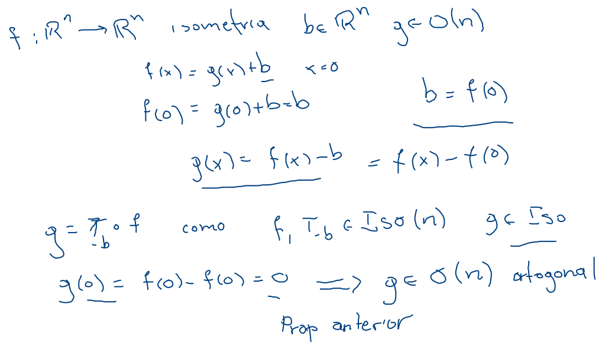
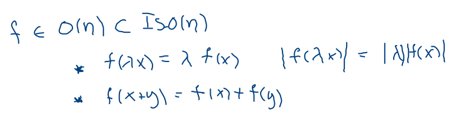
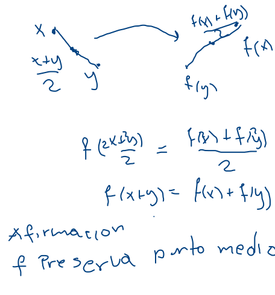
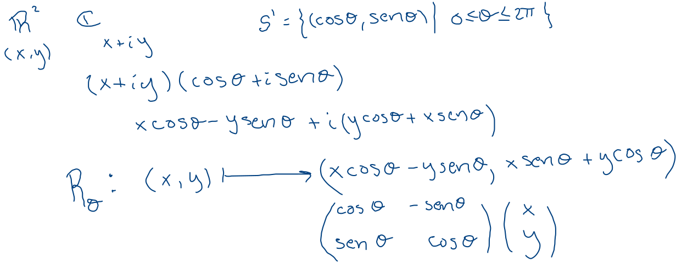

Preservan el producto interior: O(n)={f:Rn→Rn∣v⋅u=f(v)⋅f(u)∀u,v∈Rn}
Proposiciones
f∈Iso(n), tal que f(0)=0, entonces f∈O(n).
f∈Iso(n), entonces existen únicas, g∈O(n) y b∈Rn, tales que f=Tb∘g:Rnx→Rn↦g(x)+b, las transformaciones rígidas son composición de traslaciones y ortogonales. 
O(n) son lineales


El plano
Vimos traslaciones y reflexiones en una línea las cuales resultan ortogonales, pues probamos que son isometrías y es fácil verificar que fijan al origen.
Rotaciones
En coordenadas polares corresponde a sumar un ángulo constante, Rθ:R2(r,α)→R2↦(r,α+θ).
Observamos que la composición corresponde a la suma de ángulos, con lo que tenemos que las rotaciones del plano denotadas por SO(2) forman un grupo isomorfo a S1, por lo que usando la identificación R2=C deducimos  Rθ:R2(x,y)→R2↦(xcos θ−ysen θ,xsen θ+ycos θ).
Afirmación Rotaciones y reflexiones son todas las transformaciones ortogonales.